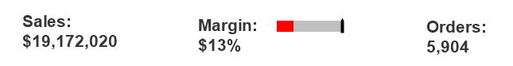
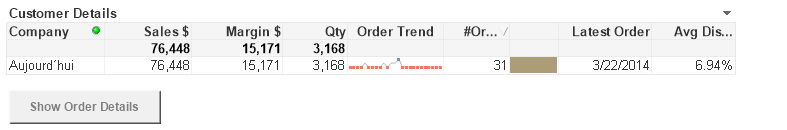
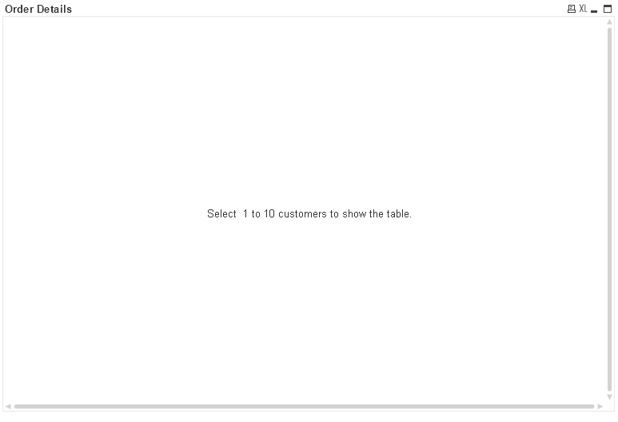
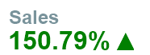

Objectives
In this lab you work on advanced interface design.
Advanced Interface Design
Expressions
Expressions are by no means limited to chart expressions and sort expressions. Other uses of expressions are as label expressions, conditional functions, dynamic text in text objects, chart attribute functions, or colour functions. Wherever there is an ellipsis (...) an expression can be used. Keep in mind that in contrast to chart expressions, calculated formulas must be preceded by an equal sign (=).
Where you can enter a label text you can enter a label expression. Using expressions enables the additional functionality of displaying dynamic text, that is, text that changes according to the current logical state of hte application.
Sometimes numbers say more than visual charts. The dashboard users require a rapid overview over the company's performance, such as CYTD Sales compared to LYTD Sales, and if the Margin reaches the 15% target. The dashboard is the given home for showing those types of high-level KPIs.
Create KPI text boxes
The CEO requires a rapid overview of the company's performance, such as the KPIs for Slaes, Margn%, and Orders.
- On the Dashboard sheet, right click the margin gauge and go to properties, select presentation, clear show scale, select the text in the chart that shows the Margin% and click Delete.
- Define segment 1 as low bound 0.0 with the colour red.
- Define semgent 2 as low bound 0.1 with the colour yellow.
- Change the indicator to Fill to value and place a border of 1 around the guage.
- On the general tab, clear Show Title in Chart.
- On the layout tab, set border width to 0pt. click ok.
- Create a new sheet object, Text Object.
- In the general properties, foreground, text, type ='Sales' & Num(sum(LineSalesAmount), '$#,##0')
- under background, set the transparency slider to 100%.
- In the general properties, under layout, set the horizontal alignment to Left and the vertical alignment to top.
- Click font, select Ariel, bold, size 16.
- Select the layout tab, and set the border width to 0pt. click ok
- Create a copy of the Sales KPI, set the text to ='Margin%:' & Num(Sum(Margin)/Sum(LineSalesAmount),'#,##0%'). click ok
- Arrange the objects as shown.

- Modify the Sales KPI text object, go to the properties and type ='Sales CYTD: ' & num(Sum(LineSalesAmount * CYTDFlag), '$#,##0') click ok
- Modify the Margin KPI text object, ='Margin% CYTD: ' & num(Sum(Margin CYTDFlag)/Sum(LineSalesAmount CYTDFlag), '#,##0%')
- Modify the Margin KPI guage expression to be Sum(Margin CYTDFlag)/Sum(LineSalesAmount CYTDFlag)
- Modify the Orders KPI text object, ='Orders CYTD: ' & num(Count(DISTINCT OrderID *CYTDFlag), '#,##0')

Conditional show on a button
You may want to provide a navigation element that leads the user when only one customer is selected form the Customer Details table ot the order details sheet.
You need the sheet ID of the Order Details sheet to start.
- On the order details sheet, right click and on the general tab in properties copy the sheet id.
- Select the customer details sheet, in the customer list box, select a customer.
- right click on the sheet and then select New sheet objects, button.
- On the general tab, under text, type Show Order Details.
- Under background, select Plain, and hten select a light grey colour.
- On the font tab, select bold and a dark grey colour.
- On the action tab, click add, for action type select layout, and for action, Activate Sheet. click ok.
- Place the cursor in the SheetID field and past the id you have copied earlier.
- On the layout tab, under show, select conditional and then type Count(CompanyName) = 1 click ok.
- Place the button below the customer details table.

Conditional Calculation
The order details table box contains many rows. In order to optimise performance you are going to define a calculation condition. It is very unlikely that your user wants to show OrderDetails for more than ten customers at a time, you can set the condition to only perform the calculation for the Order Details table box if hte user has selected between 1 and 10 customers. It is important to inform the user of this condition.
- On the order details sheet open the Order details property box, on the general tab, under calculation condition type =Count(CompanyName) <10
- click the error message button, under standard messages, select calculation condition unfulfilled and in the custom message field, type Select between 1 and 10 customers to show the table. click ok and ok again.

Select a customer and the table appears.
Icons to the tarffic light gauge
Create a visualisation that indicates if CYTD Sales are higher or lower than LYTD sales.
To do this we use a variable. Variables are often used to enforce consistency of measures especially for KPI's so that all applications use the same formula and perhaps colour definitions for consistency.
-Save the variables.txt file into the same folder you have the xls files etc used by the qlikview application.
Open the script editor and go to a blank line, from the insert menu choose include statement, locate the Variables.txt file and open.
- Reload the application, click ok.
- In the settings menu select variable overview. Here you can see a list of variables with their associated formula.
Now we can create the visualisation using the variable.
If Sales CYTD > Sales LYTD then show a green upward pointing arrow. If Sales CYTD < Sales LYTD then show a red downward pointing arrow.
- Create a next tex object on the Dashboard sheet.
- On the general properties tab, under text type, =$(vKPI_Sales_CYTD_LYTD_Icon)
- Under layout, select left for horizontal alignment and top for vertical.
- under background, set the slider for Transparency 100%.
- on the font tab select bold and size 18
- Click the colour tile and under base colour set it to be calculated and type $(vKPI_Sales_CYTD_LYTD_Color)
- click ok and ok again. Place the arrow to the right of the Sales CYTD KPI text object.

You can apply the same calculation to the colour of the text object so that the dollar figure also shows in Green.